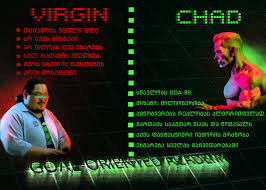

მოგესალმებით, გვინდა მოგაწოდოთ ინფორმაცია GOA-ზე. GOA არის საუკეთესო აკადემია, სადაც სწავლობს ძალიან ბევრი მიზანდასახული მოსწავლე მთელი საქართველოდან და ყველა მათგანი არიან მეგობრულები
GOA დაგეხმარებათ გახდეთ უმაგრესი პროგრამისტი, რადგან აქ სწავლის ხარისხი უმაღლესია და თითოეულ მოსწავლეს დიდ ყურადღებას აქცევენ. პირველად როდესაც შემოვედი ამ აკადემიაში, დამამატეს ჯგუფში, სადაც CEO (ნიკა კეშელავა) წერდა ჯგუფში, რომ ახალ მოსწავლეს სჭირდებოდა რაზმის ლიდერი. შემდეგ რამოდენიმე ადამიანმა შემომთავაზა, რომ ყოფილიყო ჩემი ლიდერი. რაზმის ლიდერის მოვალეობაა, რომ თავისი რაზმის მოსწავლეებს დაეხმაროს მარტოდაც და ჯგუფურადაც. ლიდერის არჩევის შემდეგ ის გიგდებთ დასარეგისტრირებელ ვიდეოს ლინკს, ამ ვიდეოთი ახალი მოსწავლე ღებულობს მითითებებს პითონში სახლის აშენების შესახებ, ხოლო მოსწავლის დავალებაა, რომ ამ სახლს დაამატოს ფანჯრები. როდესაც ამას შეასრულებ, CEO ჩააგდებს განრიგს, თუ როდის და რამდენჯერ ტარდება კვირაში გაკვეთილი. შენ კი უნდა აირჩიო შენთვის ხელსაყრელი ჯგუფი და გაწევრიანდე. პირველი გაკვეთილის დაწყების დროს ითხოვენ, რომ თქვენი მშობელიც დაესწროს გაკვეთილს. პირველ გაკვეთილს ჩაატარებს CEO - ნიკა კეშელავა და ძირითადად ისაუბრებს იმაზე, რომ კომპიუტერული თამაშები არის ცუდი. ასევე GOA-ში შემოსვლის შემდეგ სასურველია არ მიირთვა fast food-ი, გაზიანი სასმელები უნდა ჩაანაცვლო წყლით, თამაში კითხვით და ასე შემდეგ. ამ გაკვეთილის შემდეგ მომავალ გაკვეთილამდე უნდა შეასრულო დავალება. რამე თუ ვერ გაიგე აუცლებლად უნდა უთხრა რაზმის ლიდერს. GOA სხვა IT სკოლებისგან განსხვავდება იმით, რომ GOA-ს ყველა მოსწავლე ყოველ თვეში ერთხელ იკრიბება ერთმანეთის უფრო კარგად გასაცნობად. ამ შეკრების დროს ტარდება სხვადასხვა აქტივობები, სადაც შეგიძლია დააგროვო ცოდნა და თან გაერთო. GOA-ს დავალებები უნდა ატვირთო საიტზე სახელად "Git hub"-ი. ამ საიტზე შენ შეგიძლია ატვირთო შენი გაკეთებული დავალება. რასაც ატვირთავ ამ საიტზე, ყველაფერი შეინახება. ატვირთვის შემდეგ პირადში უნდა მიწერო შენი რაზმის ლიდერს დავალების შეასრულების შესახებ. GOA-ს ლოგოზე გამოსახულია 2 ადამიანი: ერთს ეწოდება "Virgin"-ი და "Chad"-ი. მათ შორის განსხავება ის არის, რომ პირველი ადამიანი ყოველთვის თამაშობს და სახლიდან არ გადის, ხოლო მეორე კი წარმატებულია, ის ვარჯიშობს, კითხულობს და სწავლობს GOA-ში. ჩვენ ახლა მცირედ ინფორმაციას მოგაწვდით CSS-ზე. ეს არ არის პროგრამირების ენა, ის არის იმისათვის რომ შენი შექმნილი საიტი გალამაზდეს, რომ არ იყოს ძალიან მოსაწყენი. საიტების შექმნისთვის გვჭირდება HTML. რა არის HTML? HTML იგივე Hypertext Markup Language, ანუ ჰიპერტექსტის ნიშნულების ენაა, რომელიც 1993 წელს შექმნა ინგლისელმა მეცნიერმა ტიმ ბერნერს ლიმ (იგი შესულია ცოცხალი გენიოსების მსოფლიო ასეულში) და წარმოადგენს ვებგვერდის სტრუქტურას. საიტები მოსაწყენი რომ არ ყოფილიყო, ამიტომაც გამოიგონეს CSS (Cascading style sheet), რომელიც გამოიყენება HTML სტრუქტურის გასალამაზებლად, შემუშავებულია კონტენტის და მისი წარდგენის, მათ შორის: ფერების, ფონტების და გაწყობის გაცალკევებისათვის.

საბოლოო ჯამში ჩვენ შეგვიძლია ვთქვათ რომ გოას აკადემიაში გვასწავლიან პროგრამირებას, არიან მეგობრულები და არის სახალისო.
C.E.O of GOA is Nika keshelava
GOA is the best!